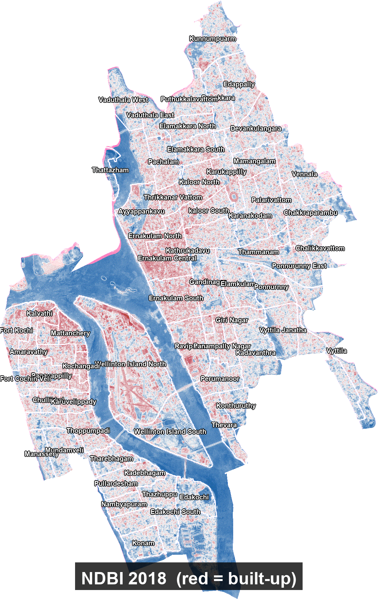
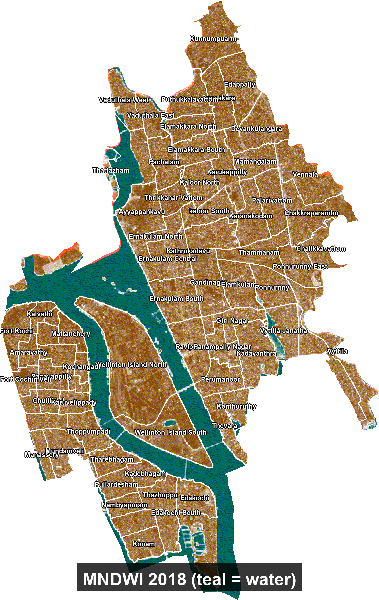
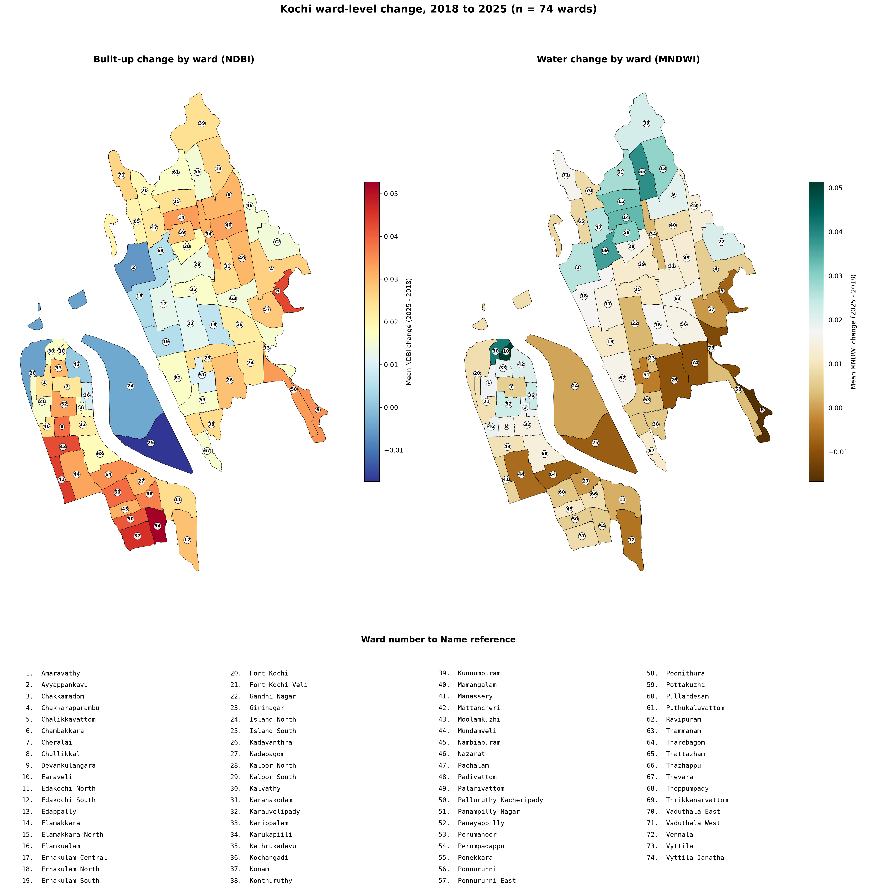

A satellite-based analysis of urban expansion and surface-water stability using Sentinel-2 imagery over the Kochi Corporation area, comparing the same January to March window in 2018 and 2025.
Kochi is a coastal city in Kerala, defined by a distinctive network of backwaters, canals, and islands that shape its urban form. Like many growing Indian metros, it faces pressure to expand, but unlike inland cities, its expansion has to negotiate an unusually water-rich landscape. This analysis asks a simple question: between 2018 and 2025, did Kochi grow into its water bodies, or did it densify on dry land?
To answer this, we use two satellite-derived indices: NDBI for built-up surfaces, and MNDWI for water. Both are cheap to compute, comparable across years, and interpretable. Read together, they tell complementary stories about the same landscape.
Remote sensing indices are arithmetic combinations of satellite bands designed to make a specific surface type stand out. Both indices used here follow the same idea: contrast a wavelength that a material reflects strongly against one it reflects weakly, then normalise the result to a range between minus one and plus one.
NDBI (Normalized Difference Built-up Index), proposed by Zha et al. (2003), combines the shortwave-infrared band (SWIR1) with the near-infrared band (NIR): (B11 minus B8) divided by (B11 plus B8). Built-up surfaces such as concrete, asphalt, and rooftops reflect strongly in SWIR and weakly in NIR, producing positive values. Vegetation and water produce negative ones. The value behaves like a per-pixel concrete score: higher means more built-up.
MNDWI (Modified Normalized Difference Water Index) has a longer history. McFeeters (1996) first exploited the near-infrared and green bands of Landsat MSS data to propose the Normalized Difference Water Index, which highlighted water and suppressed soil and vegetation but struggled to separate water from built-up areas, since concrete and water both reflect little NIR. Xu (2006) addressed this by replacing NIR with SWIR1, giving the Modified NDWI: (B3 minus B11) divided by (B3 plus B11). Water absorbs almost all SWIR while reflecting green light, so it scores strongly positive, while built-up and dry land score negative. MNDWI is now the standard water index for urban areas, and subsequent work by Jiang et al. (2021) extended this line with automated water indices tailored to Sentinel-2 imagery.
Limitations. Both indices have constraints worth noting. NDBI uses B8 (10 m) and B11 (20 m), and MNDWI uses B3 (10 m) and B11 (20 m); Earth Engine resamples B11 to 10 m, introducing a small approximation. Bare soil can produce positive NDBI values similar to built-up surfaces, occasionally inflating the built-up signal in cleared areas. Deep terrain shadows can be misclassified as water by MNDWI, though Kochi's flat coastal terrain makes this less of an issue here. Indices also shift with soil moisture, rainfall, and vegetation phenology, which is why both years were sampled from the same January to March dry season. Finally, at 10 m resolution, a single pixel may straddle a rooftop, a tree, and a road, producing an average that describes none of them well.
The analysis covers the administrative boundary of the Kochi Municipal Corporation, Kerala's largest urban local body. Kochi's geography is defined by the Vembanad backwater system, a network of lagoons, canals, and islands that surrounds and penetrates the city. Around 74 wards make up the corporation, spread across the mainland, the islands, and the southern peninsula.
The corporation boundary and ward polygons used here were sourced from two open datasets. The boundary came from the Datameet Municipal Spatial Data repository on GitHub, a community-curated collection of Indian municipal boundaries. The ward polygons came from the OpenCity Kochi wards map, which provides the current 2024 ward boundaries for the corporation. Credit goes to the contributors of both projects for maintaining and sharing these resources.

Across the corporation, the mean NDBI rose from minus 0.0654 in 2018 to minus 0.0427 in 2025, an increase of plus 0.0228. The negative baseline reflects Kochi's unusual land cover mix. The backwaters, canals, and extensive coconut and mangrove vegetation pull the city-wide average toward the negative side, so what matters is the direction of change, not the absolute value.
A shift of plus 0.0228 is small in absolute terms but consistent with the pace of change documented for other growing Indian metros over comparable periods. At the pixel level, it appears in the 2025 frame as new red-tinted patches, concentrated primarily in the eastern and north-eastern suburbs.
| Year | Mean NDBI | Change |
|---|---|---|
| 2018 | -0.0654 | n/a |
| 2025 | -0.0427 | +0.0228 |

The city-wide mean MNDWI barely moved, going from minus 0.1932 in 2018 to minus 0.1890 in 2025, a change of only plus 0.0042. This is effectively flat. The strongly negative baseline is expected, since most of the corporation is land rather than water, so the area-weighted average will always lean negative even though the backwaters and canals are locally dominant features.
The near-zero change is the more interesting finding. At the corporation scale, surface water appears to have been stable between 2018 and 2025, with gains in some places balancing losses in others. This does not mean no water changed. Individual canals may have been filled or widened, and seasonal ponds come and go. But there is no evidence of a systematic, city-wide retreat of water bodies.
| Year | Mean MNDWI | Change |
|---|---|---|
| 2018 | -0.1932 | n/a |
| 2025 | -0.1890 | +0.0042 |
Corporation-wide averages hide spatial variation. The maps below show how mean NDBI change and mean MNDWI change vary across the 74 wards. Wards are numbered at their centroids, and the legend below the maps lists each number against its ward name.

The ward-level pattern reinforces the corporation-wide story. The strongest NDBI increases cluster in the eastern and north-eastern wards such as Kakkanad, Edappally, and Vyttila, where Kochi's newer residential and commercial development has been concentrated. Wards along the backwater margins show the most variable MNDWI signals, with gains and losses that cancel out at the city scale.
The baseline for this comparison is January to March 2018, a few months before the August 2018 Kerala floods. Surface water readings from that window therefore reflect pre-flood conditions, which is useful as a relatively undisturbed reference. Wards that show the largest gains in built-up area and small reductions in water signal are likely those that were still open land or lightly developed in 2018 and have since seen construction. Conversely, wards with little visible change are not necessarily static. Many of them were already built-up before 2018, so the bulk of their transformation predates this analysis window. The absence of a large signal in those wards should be read as "change already occurred earlier," not as "nothing is happening."
Sentinel-2's ten to twenty-metre pixels are coarse relative to Kochi's dense mixed land cover, and single pixels often straddle multiple surfaces. The analysis uses only the January to March dry season, so monsoon-driven water dynamics are invisible here. Ward-level statistics are means, which are sensitive to outliers, ignore spatial structure, and cannot distinguish a single large project from city-wide densification. They should be read as directional indicators rather than precise estimates.
Imagery: Copernicus Sentinel-2 Surface Reflectance Harmonized (Level-2A), bands B3 (green), B4 (red), B8 (NIR), and B11 (SWIR1). Cloud masking: Scene Classification Layer, with pixels marked as cloud, shadow, cirrus, or snow excluded. Window: 1 January to 31 March for both 2018 and 2025, which is the dry season in Kerala.
Compositing: pixel-wise median of all cloud-free scenes, totalling 25 scenes in 2018 and 53 scenes in 2025. Indices: NDBI equals (B11 minus B8) divided by (B11 plus B8), and MNDWI equals (B3 minus B11) divided by (B3 plus B11). Change: per-pixel difference (2025 minus 2018) for each index.
Software: Google Earth Engine (Python API), geemap, GeoPandas, and Pillow. Source data: corporation boundary from the Datameet Municipal Spatial Data repository, and ward polygons from the OpenCity Kochi wards map.